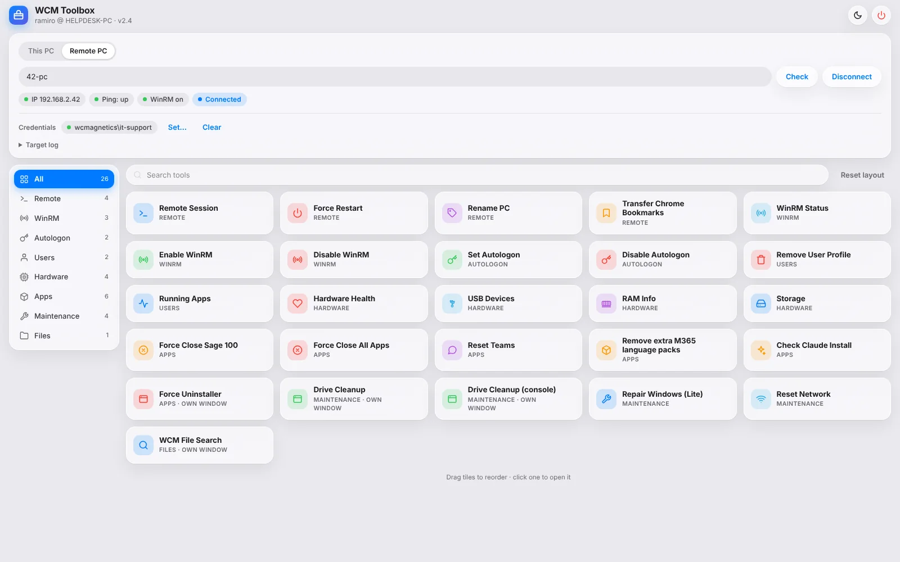

at WCMagneticsshipped
WCM Toolbox — Remote Support Scripts as a Web App
The PowerShell scripts I reach for every day, bundled into one PowerShell 7 script that serves a local web UI: an Invoke-Command remoting tool, WinRM enable/disable, autologon set/remove for shared production accounts, user profile removal, hardware health checks, drive cleanup, forced uninstall and restart, a remote USB device scanner, and a network file search. Each tool opens as a full page, tiles drag to reorder, and the whole thing runs elevated the same way the scripts always did. All 5.1-compatible where they run remotely.
PowerShell 7local web UIWinRMremote admin